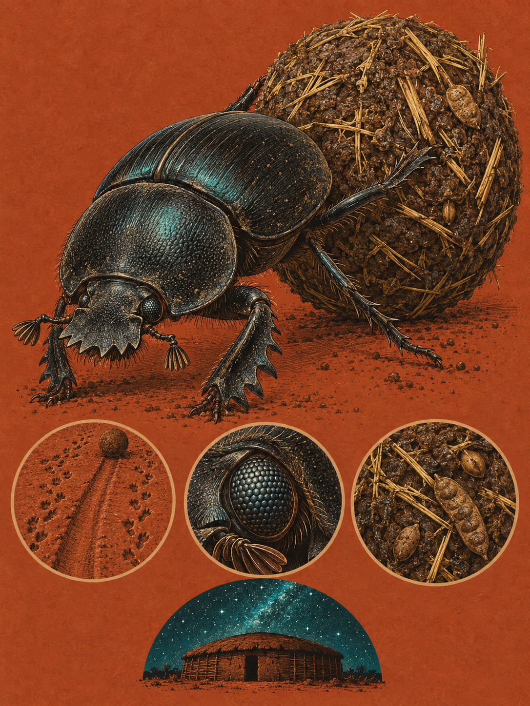

TSAVO / AMBOSELI
Scarabaeus satyrus
Swahili: „Mbung'o“, „Bugo“; Maa: „Entusi“; Kikuyu / Kamba: „Gītong'o kya mai“

Nach Sonnenuntergang rollt ein schwarzer Dungkäfer eine Dungkugel von einem frischen Haufen fort. Sein Körper ist 25 Millimeter lang und vollständig schwarz. Im direkten Licht kann der Panzer metallisch und leicht irisierend schimmern. Der breite Kopfschild ist wie eine Schaufel gestaltet, die Vorderbeine tragen an den Außenkanten Zähne und Sporen, und die verlängerten, abgeflachten Hinterbeine rollen die Kugel rückwärts. Die Männchen sind im Durchschnitt größer als die Weibchen und tragen am Kopf häufig stärkere Vorsprünge oder hornartige Strukturen. Die Form gehört hier ganz zur Aufgabe: graben, schieben, riechen und den Himmel lesen.
Der Name Scarabaeus bedeutet auf Lateinisch „Käfer“ oder „Skarabäus“. Der Artname satyrus verweist auf den Satyr aus der griechischen Antike. Warum Carl Henrik Boheman diese Bezeichnung wählte, ist nicht überliefert. Boheman beschrieb die Art 1860. Eine frühere Datierung aus dem Jahr 1857 beruht auf einer taxonomischen Verwechslung und gilt für diesen Käfer als inkorrekt. Das taxonomische Fundament stützte sich auf Sammlungen aus den Expeditionen von Johan August Wahlberg, der von 1838 bis 1845 die Region Caffraria bereiste und Insekten sammelte. Spätere Revisionen präzisierten die Abgrenzung zu verwandten Gattungen.
In Tsavo und Amboseli beginnt diese Bewegung, wenn die Umgebungstemperaturen sinken. Der Dungkäfer ist nachtaktiv und lebt in trockenen und halbtrockenen Savannen des südlichen und östlichen Afrikas. Für seine tiefen Brutkammern braucht er lockere, sandige oder leicht durchdringbare Böden. In der abklingenden Trockenzeit befinden sich große Teile der Population vermutlich unter der Erde in Ruhekammern, weil frischer Dung schnell verkrustet. In der Zeit vom 24. September bis zum 12. Oktober endet in Südkenia die lange Trockenzeit und beginnt die kurze Regenzeit. Vermutlich lösen die ersten Regenfälle ein massenhaftes Schlüpfen aus, weil sie den Boden aufweichen und die Aktivität großer Pflanzenfresser steigt. Die Käfer suchen dann frischen Dung und nutzen das kurze Fenster mit geeigneter Bodenfeuchtigkeit.
Ein großer Pflanzenfresser setzt frischen Dung ab, und innerhalb von Minuten treffen Tausende koprophage Käfer verschiedener Arten an dieser punktuellen Quelle ein. Dort beginnt die Konkurrenz. Der Dungkäfer trennt ein Stück aus dem Haufen, formt es rasch zu einer Kugel und flieht. Die Kugel ist Proviant und Besitz zugleich, denn andere Käfer können sie stehlen. Die fächerförmigen Enden seiner Antennen vergrößern die Oberfläche für Geruchsrezeptoren. So findet er frischen Dung über große Distanzen. Erwachsene Tiere filtern aus dem feuchten Dung nährstoffreiche Flüssigkeiten und feine organische Teilchen. Die Larven fressen auch die feste, faserige Masse im Inneren der Brutkugel.
Warum läuft er dabei geradeaus, obwohl der Boden dunkel ist? Der kürzeste und schnellste Weg aus der Konkurrenzzone ist eine gerade Linie. Jede Kurve erhöht die Wahrscheinlichkeit, die eigene Spur zu kreuzen oder auf einen Konkurrenten zu treffen. Am Boden fehlen dem Käfer jedoch die nötigen Orientierungspunkte. Deshalb richtet sich sein Blick nach oben. In mondlosen Nächten registrieren seine Facettenaugen nicht einzelne schwach leuchtende Sterne. Sie verarbeiten die Helligkeitsunterschiede des diffusen Lichtbandes der Milchstraße, das sich vom dunklen Himmel abhebt. Dieses Band hält die Bewegungsachse fest.
Die Orientierung beginnt mit einem kurzen Tanz. Nachdem der Käfer eine Kugel geformt hat, klettert er auf ihren Scheitelpunkt und dreht sich einmal um die eigene senkrechte Körperachse. Dabei liest er das Lichtband aus und kalibriert seinen inneren Kompass. Dann setzt er die Kugel in Bewegung. Dieses Verhalten wurde 2013 von einem Forschungsteam um Marie Dacke, Eric Warrant, Marcus Byrne, Clarke Scholtz und Emily Baird entschlüsselt. Feldversuche zeigten: Wird der Himmel blockiert, verlieren die Käfer ihre gerade Linie. Eine transparente Kappe störte sie dagegen nicht. Der Blick nach oben ist also entscheidend.
Im Planetarium in Johannesburg wurde die Frage noch genauer gestellt. Der vollständige Sternenhimmel und das diffuse Band der Milchstraße führten die Käfer rascher ans Ziel als einzelne helle Sterne. Bei vollständiger Dunkelheit brauchten sie am längsten. Damit fiel die Vorstellung, einzelne Leitsterne würden den Weg weisen. In mondhellen Nächten kann sich der Käfer am Polarisationsmuster des Mondlichts orientieren, doch diese Erklärung reicht für Neumond nicht aus. Auch Bäume oder Berge sind keine nötigen Wegmarken. Der Käfer braucht keinen einzelnen Stern, den er ansteuert. Er braucht eine helle Form, die über dem dunklen Himmel stehen bleibt.
Weit genug vom Dunghaufen entfernt gräbt der Käfer die Kugel in lockere Erde ein. Sie wird verzehrt oder dient der Eiablage. Üblicherweise formt das Männchen die Kugel und bietet sie einem Weibchen an. Wird sie angenommen, rollt es rückwärts weiter, während das Weibchen mitläuft oder auf der Kugel sitzt. Erst nach dem Eingraben kommt es zur Kopulation. Danach formt das Weibchen eine eigene Brutkugel und legt ein einzelnes Ei hinein. Die Larve schlüpft als weicher, weißer Engerling in C-Form. Ihr Entwicklungszyklus vom Ei über die Puppe bis zum erwachsenen Käfer dauert zwischen zwei Monaten und mehreren Jahren.
Wenn in der Dunkelheit nur die Dungkugel über die Erde rollt, hält der Käfer seine Linie am blassen Band der Milchstraße. Für einen Moment steht er oben auf der Kugel und dreht sich, dann verschwindet er mit ihr im schwarzen Boden.
Die Larven des Dungkäfers werden als Nahrungsquelle genutzt. Die Forschungsdaten nennen jedoch keine bestimmte kenianische Gemeinschaft und keine Region, in der sie verzehrt werden. Auch lokale kenianische Mythen, Rituale und Sprichwörter sind nicht dokumentiert. Für Kenia ist hier nicht mehr belegt. Das lässt die Geschichte offen, statt sie mit einer Vermutung zu füllen.
Eine überlieferte Geschichte stammt aus dem antiken Ägypten und bezieht sich vorwiegend auf die verwandte Art Scarabaeus sacer. Dort galt der Dungkäfer als Zeichen von Schöpfung, Wiedergeburt und der Unsterblichkeit der Sonne. Die gerollte Kugel stellte die wandernde Sonnenscheibe dar. Große Amulette aus grünlichem Stein, Herz-Skarabäen genannt, wurden in die Leinentücher von Mumien eingewickelt. Sie sollten das Herz des Verstorbenen bei der Seelenwägung vor der Göttin Maat schützen. Diese Überlieferung gehört also nicht sicher zu Scarabaeus satyrus. Für Kenia bleibt auch der Schutzstatus ungeklärt: Eine Quelle nennt „Vulnerable“, eine andere „Not Evaluated“. Beide Angaben sind in der Datenbasis umstritten.
Wo und wann: An einer frischen Kotansammlung großer Pflanzenfresser in Tsavo oder Amboseli, in den ersten Stunden nach Sonnenuntergang. Warte auf den Orientierungstanz, wenn der Käfer auf die Kugel steigt und sich einmal dreht. Vermeide helle Lampen, Blitze und eine Position, die den Blick zum Himmel versperrt.
Brennweite: 26 bis 60 mm für eine Aufnahme auf Bodenhöhe am Futterplatz und für das Detail von Käfer und Kugel.
Bild-Idee: Der schwarze Käfer steht auf der Dungkugel, das diffuse Band der Milchstraße bleibt über ihm sichtbar. Zeige die gerade Spur, die von der frischen Kotansammlung wegführt.